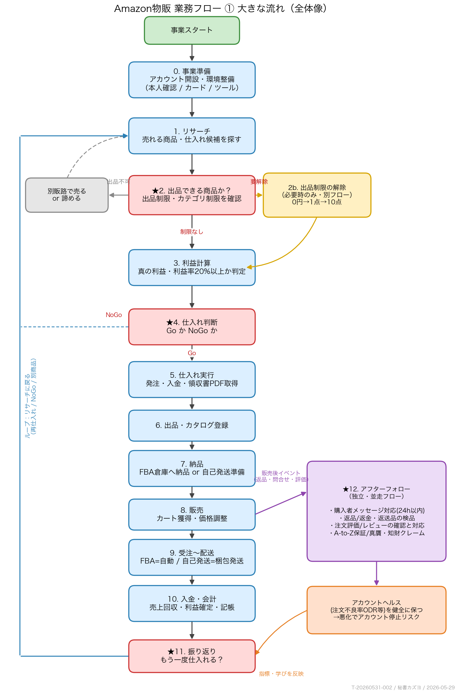
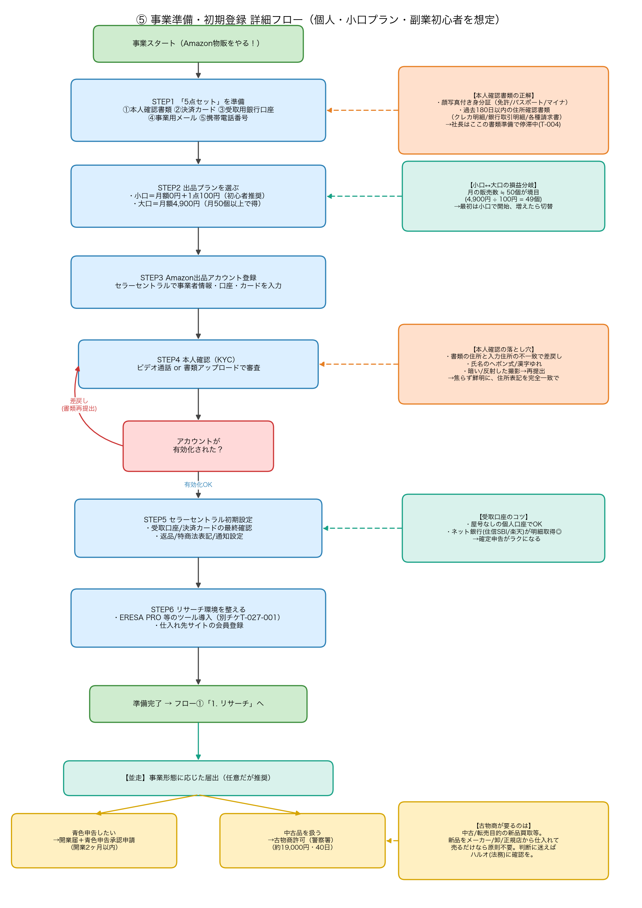
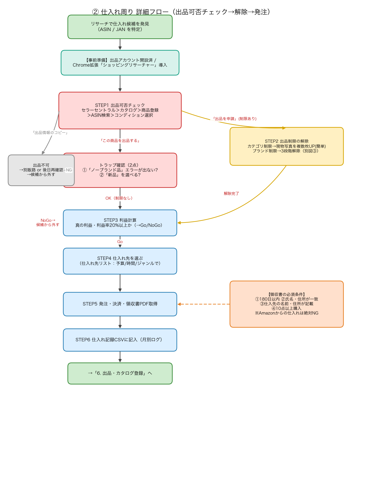
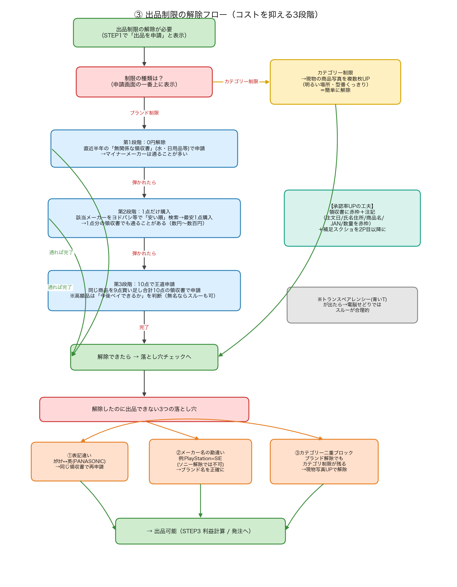
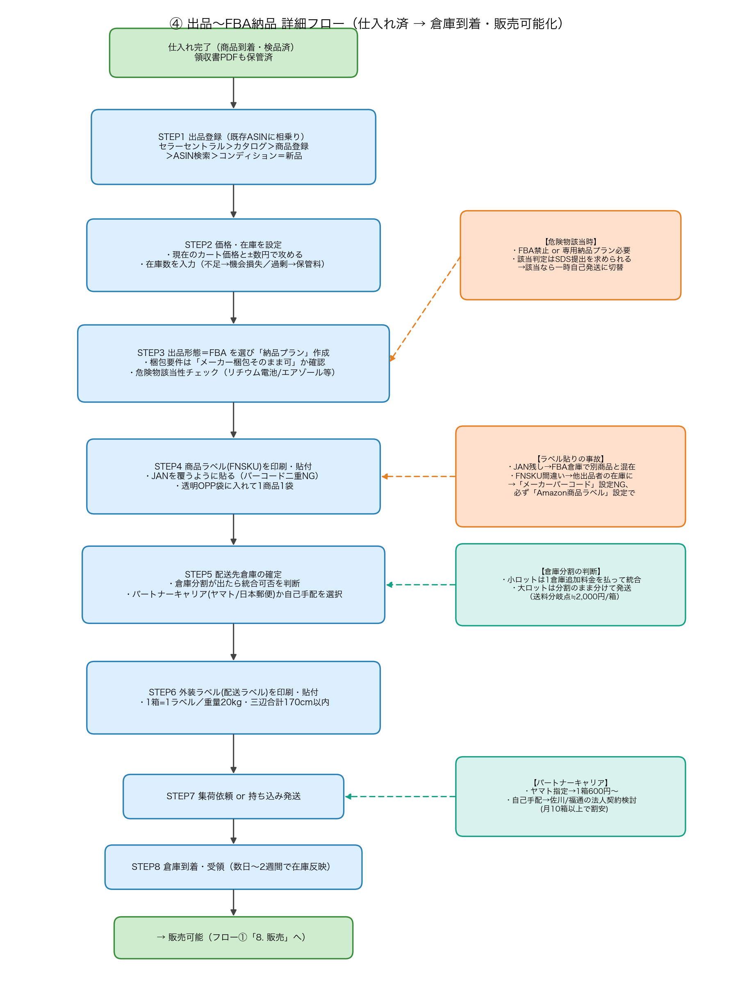
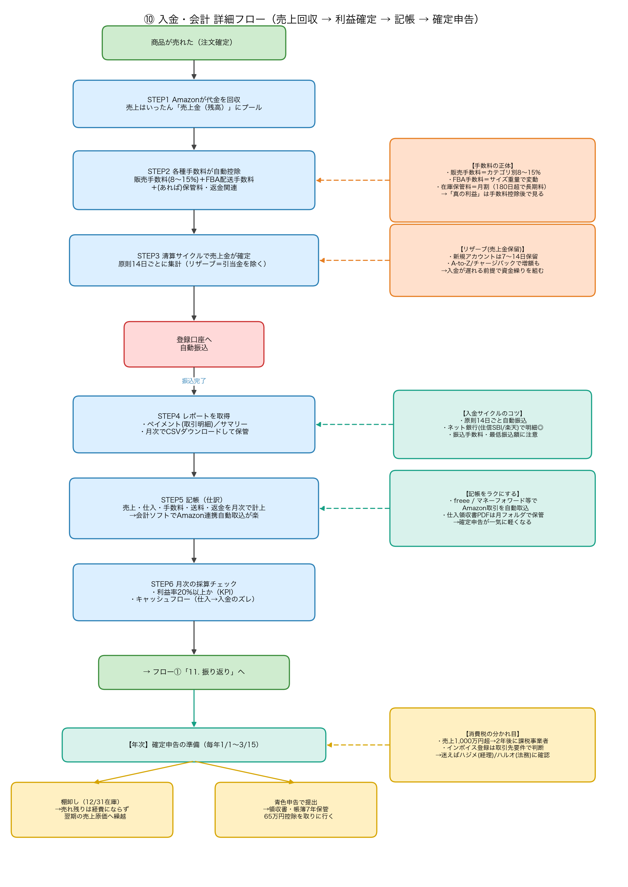
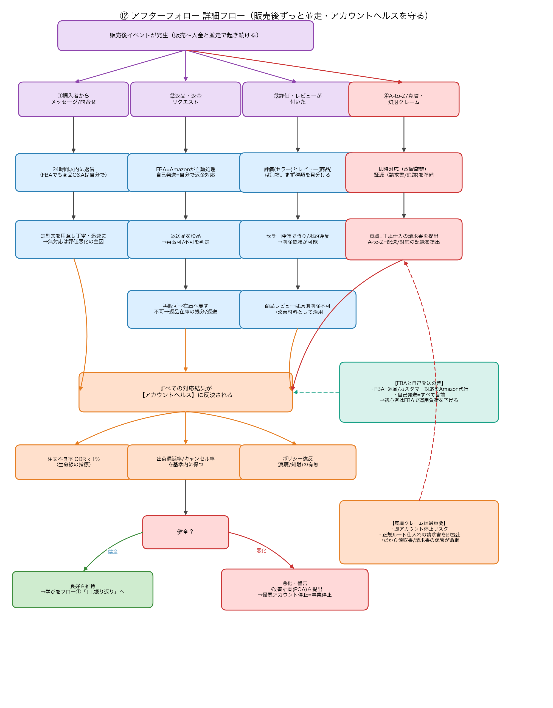

この資料の使い方
Amazon物販の業務を「①まず全体像をつかむ → ②各段階をToDoレベルまで分解」の2段で図解しました。
社長が最も迷われている 「仕入れ」 周り（②③）を最も厚く描いています。各図はクリックで拡大できます。
詳細な手順チェックリストは各セクションの ToDoファイル（.md） に対応しています。
開始/完了
作業ステップ
判断・確認ゲート◇
条件分岐/解除
補足メモ
注意・要警戒
アフターフォロー（並走）
📋 作成・レビュー状況（2026-06-03 時点）
| 図 / フロー | 作成 | 社長レビュー |
|---|
| ① 大きな流れ（全体像） | ✅ | 🔄 一読のみ（確認ゲート未通過） |
| ⑤ 事業準備・初期登録 | ✅ | ⬜ 未 |
| ② 仕入れ周り | ✅ | ⬜ 未 |
| ③ 出品制限の3段階解除 | ✅ | ⬜ 未 |
| ④ 出品〜FBA納品 | ✅ | ⬜ 未 |
| ⑩ 入金・会計 (今回追加) | ✅ | ⬜ 未 |
| ⑫ アフターフォロー (今回追加) | ✅ | ⬜ 未 |
これで 全段階の図解が出そろいました（フロー図は完成）。まずは ①全体像の確認ゲートを正式に通していただき、そのうえで気になる段階から詳細レビューに進むのが効率的です。
① 大きな流れ（全体像）
ゴール: 事業の全体地図をつかむ ──「探す → 売れるか確かめる → 仕入れる → 売る → お金にする → 振り返る」のループ

01_overview-flow.png
要点
- 本流は0〜11の一本道＋「⑫アフターフォロー」が販売後ずっと並走。
- 赤いゲート◇（出品可否・仕入れ判断・振り返り）を飛ばすと損失に直結。
- 社長が迷う「仕入れ」は、実は仕入れる前の確認作業（出品制限チェック）がカギ。
このループを1周回すのが当面のゴール
- 軸B（T-004 体験仕入れ）＝この1周を体感すること。
- ⑫が悪化するとアカウント停止＝事業停止。だから独立フローとして常時監視。
⑤ 事業準備・初期登録（全体像の段階0）
ゴール: 「売れる状態」を作る ── アカウント開設からリサーチ環境まで

05_setup-flow.png ／ ToDo: 05_setup-todo.md
要点
- 5点セット（本人確認書類・決済カード・受取口座・事業用メール・携帯番号）を先に準備。
- 出品プランは小口（月0円＋1点100円）で開始、月50個超で大口へ。
- 並走で青色申告（開業2ヶ月以内）／古物商（中古を扱うなら）の届出。
⚠️ 本人確認(KYC)の落とし穴 ← 社長は今ここ(T-004)
- 書類の住所と入力住所の不一致で差戻し → 完全一致に。
- 暗い/反射した撮影 → 鮮明に撮り直し。
- 氏名のヘボン式・漢字ゆれに注意。
② 仕入れ周り（出品可否チェック → 解除 → 発注）★社長の最重要関心
ゴール: 仕入れる前に「売れる商品か」を確定し、ムダ仕入れを防ぐ

02_sourcing-flow.png ／ ToDo: 02_sourcing-todo.md ／ 仕入れ先30社: ../T-20260521-002/suppliers-list.csv
要点（STEP1の3分岐が肝）
- 「この商品を出品する」→ 制限なし → トラップ確認へ。
- 「出品を申請」→ 制限あり → ③解除フローへ。
- 「出品情報のコピー」→ 出品不可 → 候補から外す。
- トラップ2点: ノーブランド品エラー / 新品が選べるか。
⚠️ 領収書の必須4条件（解除に効く）
- ①180日以内 ②氏名・住所が一致 ③仕入先の名前・住所記載 ④10点以上購入。
- Amazonからの仕入れ領収書は絶対NG。
③ 出品制限の3段階解除
ゴール: 制限商品を「売れる状態」にする ── コストの安い順に試す

03_restriction-release-flow.png ／ 出典: 99_reference_listing-restriction-release-manual.md
3段階（上から順に・通ったら終了）
- 第1段階: 0円解除 … 無関係な領収書（水・日用品）で申請。マイナーメーカーは通りやすい。
- 第2段階: 1点購入 … 最安1点の領収書で申請（数円〜数百円）。
- 第3段階: 10点で王道申請 … 計10点の領収書。高額品はペイ可否で判断。
⚠️ 解除したのに出品できない3つの落とし穴
- ①表記違い（カタカナ↔英）②メーカー名の勘違い（例: PlayStation→SIE）③カテゴリー二重ブロック。
- トランスペアレンシー（青いT）が出たら電脳せどりではスルーが合理的。
④ 出品〜FBA納品
ゴール: 仕入れた在庫をFBA倉庫に届けて販売可能にする

04_listing-fba-flow.png ／ ToDo: 04_listing-fba-todo.md
要点
- 既存ASINに相乗り（コンディション＝新品）→ 価格・在庫設定。
- FBA選択 → 納品プラン作成 → FNSKUラベル貼付 → 配送 → 倉庫受領。
- 倉庫分割は送料分岐点≒2,000円/箱で統合可否を判断。
⚠️ 事故が多いトップ3
- ラベル設定ミス（メーカーバーコード設定 or JAN露出）→ 在庫混在の重大事故。
- 危険物見落とし（化粧品・電池）→ 受領拒否・返送料。
- 倉庫分割の放置 → 想定外の送料増。
⑩ 入金・会計 (今回追加)
ゴール: 売上を回収し「真の利益」を確定 → 記帳 → 確定申告へ

10_accounting-flow.png ／ ToDo: 10_accounting-todo.md
要点
- 売上は手数料控除後に14日サイクルで確定 → 登録口座へ自動振込。
- 「真の利益」＝販売手数料(8〜15%)＋FBA手数料＋保管料を引いた後。利益率20%はここで判定。
- 記帳は会計ソフト＋Amazon連携で自動取込すると確定申告が軽くなる。
⚠️ お金まわりの注意
- リザーブ（売上金保留）＝新規は7〜14日保留。入金は遅れる前提で資金繰り。
- 年末在庫は経費にならず翌期へ繰越（棚卸し）。
- 売上1,000万円超で課税事業者化 → 経理ハジメ/法務ハルオに確認。
⑫ アフターフォロー（販売後ずっと並走） (今回追加)
ゴール: 顧客満足とアカウント健全性を保ち、事業継続そのものを守る

12_afterfollow-flow.png ／ ToDo: 12_afterfollow-todo.md
4つのイベントへの対応
- ①購入者メッセージ → 24h以内に返信。
- ②返品・返金 → FBAは自動 / 返送品を検品し再販可否判定。
- ③評価・レビュー → 評価(セラー)は削除依頼可・レビュー(商品)は原則不可。
- ④A-to-Z/真贋クレーム → 即時対応・証憑提出。
⚠️ アカウントヘルスが生命線
- 注文不良率 ODR < 1% を死守。週1で健全性ページ確認。
- 真贋クレームは即停止リスク → 正規仕入れの請求書を即提出（②仕入れと直結）。
- 悪化時は改善計画(POA)提出。困ったら法務ハルオへ。
🙋 社長にお願いしたいこと
- ①全体像でイメージは合っていますか？（段階の粒度・順番・抜け漏れの感覚）— ここを確定ゲートとして通したいです。
- OKであれば、気になる段階の詳細フロー＋ToDoを順にご確認ください（仕入れ周り②③を最初におすすめします）。
- 不足・違和感のある箇所があれば、その図名（例: ④）でお知らせいただければ即修正します。